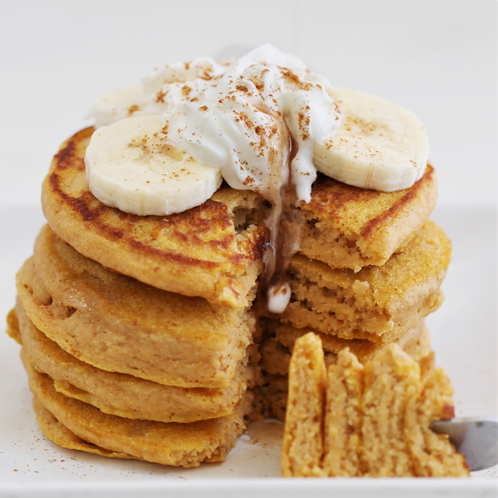

Sweet Potato Pancakes

Description
Prep Time:
20 mins
Cook Time:
40 mins
Total Time:
1 hrs
Servings:
8
Ingredients
- ¾ pound sweet potatoes
- 1 ½ cups all-purpose flour
- 3 ½ teaspoons baking powder
- 1 teaspoon salt
- ½ teaspoon ground nutmeg
- 1 ½ cups milk
- ¼ cup unsalted butter, melted
- 2 large eggs, beaten
Steps
- Bring a medium saucepan of lightly salted water to a boil. Add sweet potatoes and cook until tender but still a bit firm, about 15 minutes. Drain, then immediately immerse in cold water to loosen skins. Drain again; remove and discard skins.
- Sift flour, baking powder, salt, and nutmeg together into a medium bowl.
- Chop sweet potatoes, transfer to another medium bowl, and mash. Mix in milk, melted butter, and egg. Gradually mix in flour mixture until well combined.
- Lightly grease a griddle and preheat over medium-high heat.
- Working in batches, drop heaping tablespoonfuls batter onto the hot griddle and cook until the surface begins to bubble, 3 to 4 minutes. Flip and cook on the other side until golden brown, 2 to 3 more minutes.
Click here to go back to homepage.